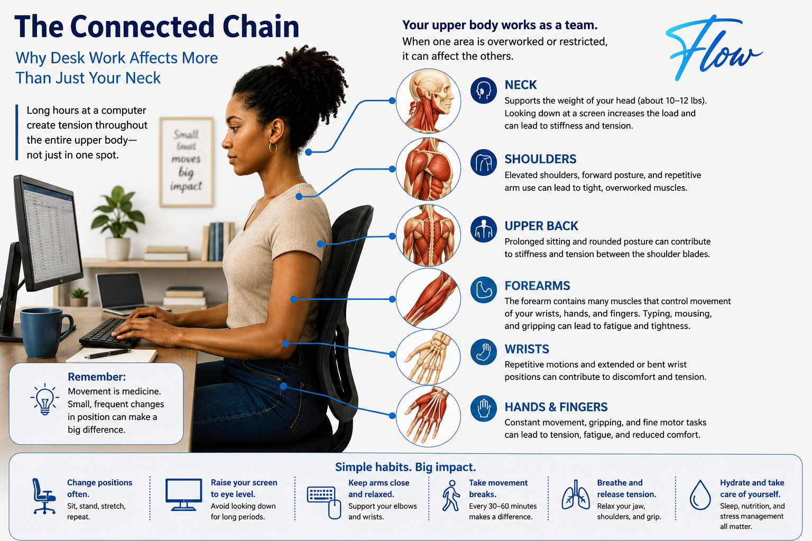
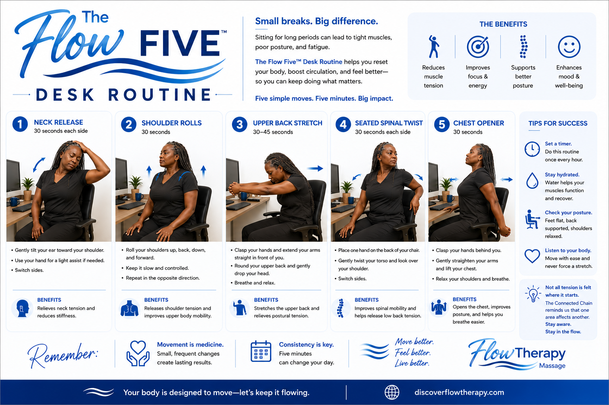
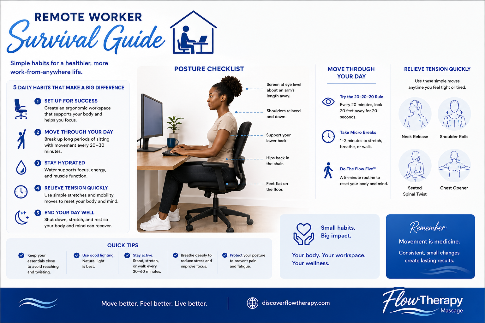
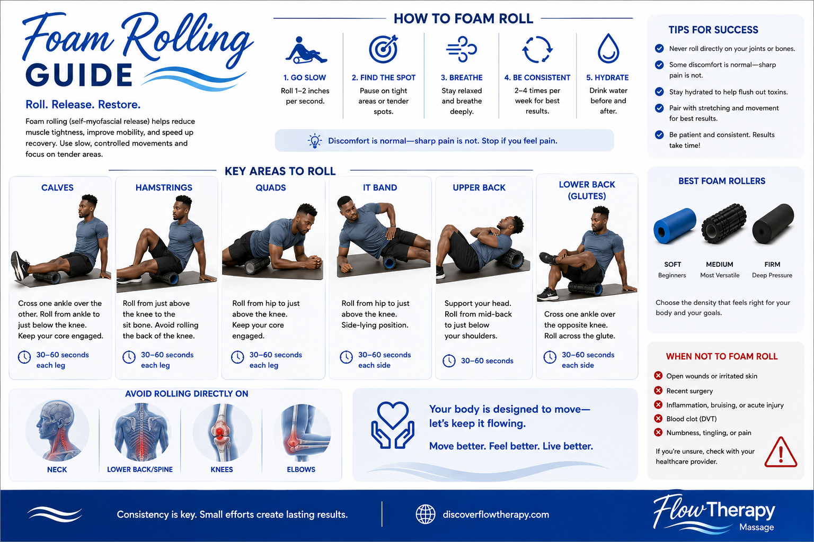

Workplace Wellness
The Connected Chain
See how prolonged desk work can create tension throughout the upper body—not only in the neck and shoulders.
Explore trusted wellness guides, self-care tools, downloadable resources, and practical tips designed to help you move, feel, and live better between visits.
Browse practical guides designed to support movement, recovery, workplace wellness, and everyday self-care.

Workplace Wellness
See how prolonged desk work can create tension throughout the upper body—not only in the neck and shoulders.

Movement & Mobility
Five simple movements designed to reduce stiffness, encourage circulation, and help you reset during the workday.

Workplace Wellness
Create a healthier work-from-home routine with practical tips for posture, movement breaks, hydration, lighting, and recovery.

Recovery & Self-Care
Learn where and how to foam roll safely, which areas to avoid, and how beginners can gradually introduce rolling into a recovery routine.
The FlowResources library will continue growing with new wellness guides, movement routines, self-care tools, and printable resources. Check back regularly for new additions.
© FlowTherapy • Move Better. Feel Better. Live Better.